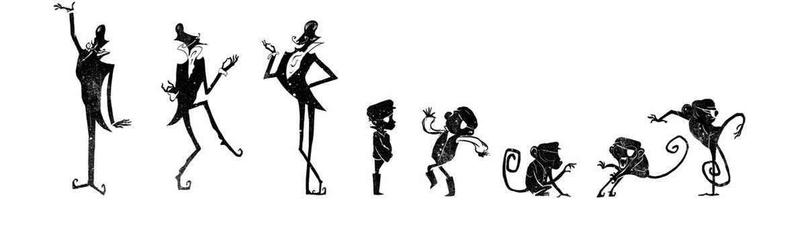
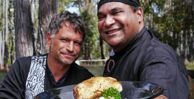

It all starts with an idea....
We are passionate about the process of turning ideas into content
that both moves and inspires.
We have over fifteen years experience of taking
your ideas and bringing them to life
through sound, image and motion.
Our aim is to make ideas become stories...
Our Services

Offline Editing
We have an offline suite running Avid, Adobe Premiere Pro & Final Cut Pro, providing the power & flexibility you need to meet the most demanding creative editorial challenges.
Motion Graphics & Animation
We have considerable experience creating digital animation & motion graphics. We understand design, integration & movement. We provide animation content for title sequences, documentaries, short films & TVCs.
Photography
We have over 10 years of experience taking professional photographs, from business interiors, children at play, weddings, landscapes, and family moments.
Colour Grading
Our work-flow allows for real-time, calibrated color-grading sessions, bringing out the best in your footage regardless of the format.
Sound Editing & Design
We provide the highest level of sound design, editing & mixing services. We have lots of audio restoration & sound design plug-ins, & an extensive sound library.
Voice Over Recording & ADR
Our voiceover recording studio provides a quiet & comfortable space to record all Voice Over needs. We also have facilities for Additional Dialogue Replacement (ADR).
Production
We have over 10 years of experience writing, directing and producing award winning short films, documentaries and music videos.
Recent Projects
Two mates, cooks, surfers take a trip around the top end of Australia and discover amazing locations, wonderful people,
passionate producers and unique produce. Starring Celebrity Chefs Hayden Quinn and Dan Churchill and produced by Mago Films.
Noah was Senior Editor and Wendi was Assistant Editor.
Jack Stein works his way through WA’s South-West and North-West,
meeting the producers at the helm of the foodie revolution defining the regions. Join him on this adventure across the
foodie mecca of Australia! Produced by Mago Films,
Noah was Senior Editor with Wendi on Sound Edit.

Comedian Derek Nannup and chef Mark Olive travel through Western Australia's South West meeting local producers, hunters and gatherers.
Produced by Mago Films, with assistance from Karla Hart Enterprises and Pink Pepper Productions,
Noah was Senior Editor and Wendi on Sound Edit.
Extreme Animal Transport follows large exotic animals as they are exported across the globe, facing extreme conditions to reach their destinations.
Produced and directed by Contingent Productions,
full post production by Balthazaar Media, with Wendi also as cinematographer.
Balthazaar Media provided all of the photographs and video content for Kidz Galore as they rebranded their company through a new website
and brochures. Our work included videos of the graduating children, photographs of children playing and photographs of building interiors.
Balthazaar Media provided the post production on this VAM Media production.
Josh Byrne (Gardening Australia) visits five 10 star energy efficient
family homes throughout Australia, collating the statistical performance of the houses and the happiness of their inhabitants.
Art Historian Dr Christina Chau is tested to her limits by Australian artists working in extreme mediums.
Could shocking art have the power to change the world?
Produced by Periscope Pictures, Balthazaar Media provided full post production including edit, graphics, sound and grade.
The inaugural program for the launch of ABC Arts on Iview, #On Assignment sees photographer James Simmons follow professional photographers for a day.
Produced by VAM Media, Balthazaar Media provided the full post production - edit, motion graphics and sound edit.
Drawn to Water follows underwater artist Roger Swainston from the port city of Fremantle to Coral Bay, as he embarks on his fifteenth year of a project
mapping the life of the Ningaloo Reef and it's creatures. Produced and directed by VAM Media for the ABC, with Noah as Editor.